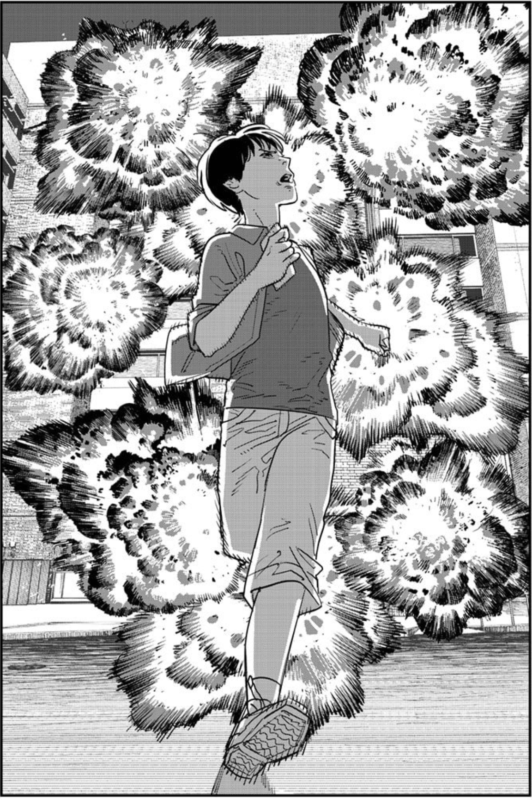

現在影子被拉的更長了。我知道，夜幕已垂臨。往昔的縫隙似曾相識：它們不增，不減。我們是否正在等待同一束綠光？
je pense
你的 棗泥在我 破了洞的兜裡
躬著腰 擠到脊梁骨 像天上那麼長 一雙小眼睛 和半個鼻子 唔著手心 有些 哈氣的來信
你說你從不停留
你說你從不停留
你說你從不停留
從不
然而
然而總是徘徊
a toi
史蒂夫小姐 您的黑茶还没喝
是不合您的胃口吗？
安妮斯先生昨日来电，问候您的骨头。他想邀请您明天同他一起去远足。
或許只是探訪一隻冬天來的蝴蝶。
他讓我務必轉告您，
他會在那裡等您來，直到您等到他。
在此之前， 他從未離開。
：夢克斯通訊社特別贊助 ： 你與湖心 只有一拍的距離 おはようございます
i donnn t even' know, er -i -- またね, q --- qt.org